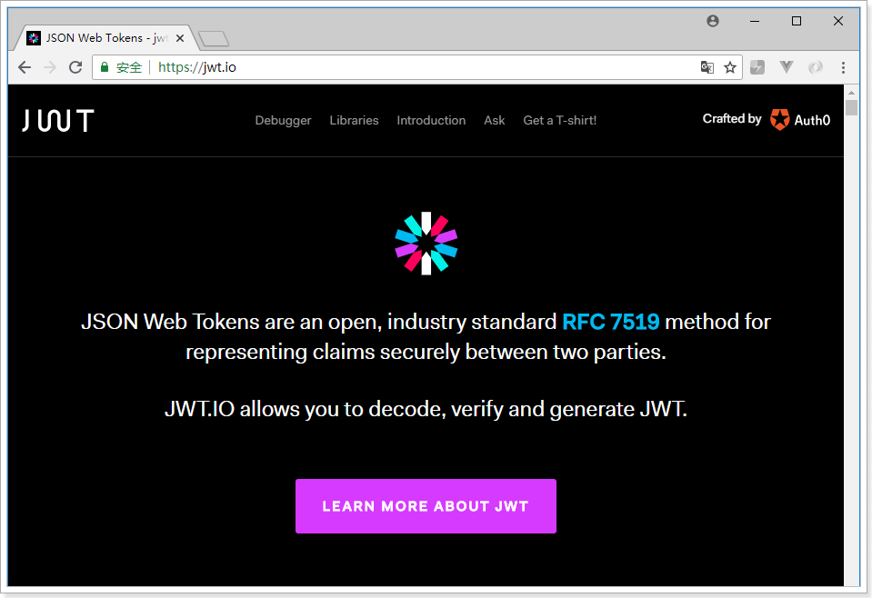
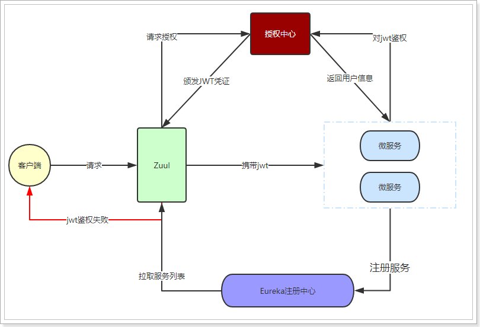
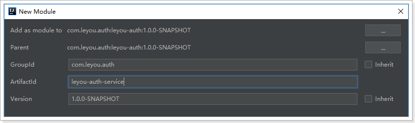
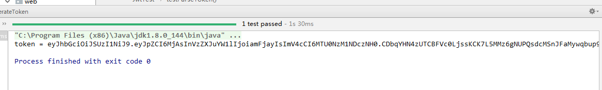
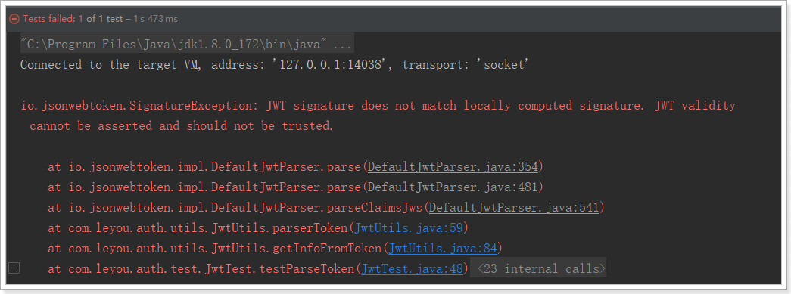
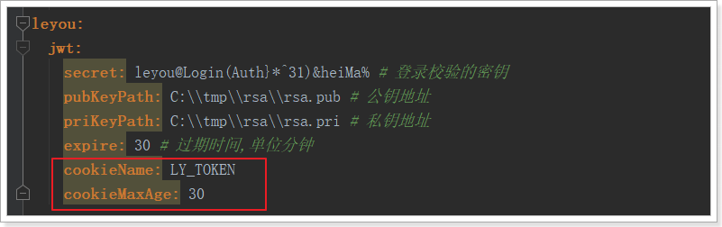
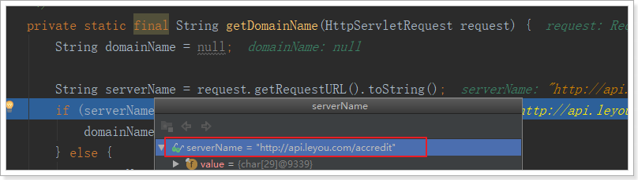
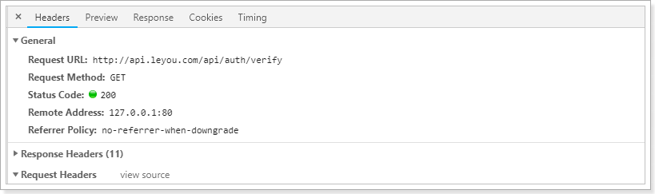

0.学习目标
1.无状态登录原理
1.1.什么是有状态？
有状态服务，即服务端需要记录每次会话的客户端信息，从而识别客户端身份，根据用户身份进行请求的处理，典型的设计如tomcat中的session。
例如登录：用户登录后，我们把登录者的信息保存在服务端session中，并且给用户一个cookie值，记录对应的session。然后下次请求，用户携带cookie值来，我们就能识别到对应session，从而找到用户的信息。
缺点是什么？
- 服务端保存大量数据，增加服务端压力
- 服务端保存用户状态，无法进行水平扩展
- 客户端请求依赖服务端，多次请求必须访问同一台服务器
1.2.什么是无状态
微服务集群中的每个服务，对外提供的都是Rest风格的接口。而Rest风格的一个最重要的规范就是：服务的无状态性，即：
- 服务端不保存任何客户端请求者信息
- 客户端的每次请求必须具备自描述信息，通过这些信息识别客户端身份
带来的好处是什么呢？
- 客户端请求不依赖服务端的信息，任何多次请求不需要必须访问到同一台服务
- 服务端的集群和状态对客户端透明
- 服务端可以任意的迁移和伸缩
- 减小服务端存储压力
1.3.如何实现无状态
无状态登录的流程：
- 当客户端第一次请求服务时，服务端对用户进行信息认证（登录）
- 认证通过，将用户信息进行加密形成token，返回给客户端，作为登录凭证
- 以后每次请求，客户端都携带认证的token
- 服务端对token进行解密，判断是否有效。
流程图：

整个登录过程中，最关键的点是什么？
token的安全性
token是识别客户端身份的唯一标示，如果加密不够严密，被人伪造那就完蛋了。
采用何种方式加密才是安全可靠的呢？
我们将采用JWT + RSA非对称加密
1.4.JWT
1.4.1.简介
JWT，全称是Json Web Token， 是JSON风格轻量级的授权和身份认证规范，可实现无状态、分布式的Web应用授权；官网：https://jwt.io

GitHub上jwt的java客户端：https://github.com/jwtk/jjwt
1.4.2.数据格式
JWT包含三部分数据：
Header：头部，通常头部有两部分信息：
- 声明类型，这里是JWT
- 加密算法，自定义
我们会对头部进行base64加密（可解密），得到第一部分数据
Payload：载荷，就是有效数据，一般包含下面信息：
- 用户身份信息（注意，这里因为采用base64加密，可解密，因此不要存放敏感信息）
- 注册声明：如token的签发时间，过期时间，签发人等
这部分也会采用base64加密，得到第二部分数据
Signature：签名，是整个数据的认证信息。一般根据前两步的数据，再加上服务的的密钥（secret）（不要泄漏，最好周期性更换），通过加密算法生成。用于验证整个数据完整和可靠性
生成的数据格式：

可以看到分为3段，每段就是上面的一部分数据
1.4.3.JWT交互流程
流程图：

步骤翻译：
- 1、用户登录
- 2、服务的认证，通过后根据secret生成token
- 3、将生成的token返回给浏览器
- 4、用户每次请求携带token
- 5、服务端利用公钥解读jwt签名，判断签名有效后，从Payload中获取用户信息
- 6、处理请求，返回响应结果
因为JWT签发的token中已经包含了用户的身份信息，并且每次请求都会携带，这样服务的就无需保存用户信息，甚至无需去数据库查询，完全符合了Rest的无状态规范。
1.4.4.非对称加密
加密技术是对信息进行编码和解码的技术，编码是把原来可读信息（又称明文）译成代码形式（又称密文），其逆过程就是解码（解密），加密技术的要点是加密算法，加密算法可以分为三类：
- 对称加密，如AES
- 基本原理：将明文分成N个组，然后使用密钥对各个组进行加密，形成各自的密文，最后把所有的分组密文进行合并，形成最终的密文。
- 优势：算法公开、计算量小、加密速度快、加密效率高
- 缺陷：双方都使用同样密钥，安全性得不到保证
- 非对称加密，如RSA
- 基本原理：同时生成两把密钥：私钥和公钥，私钥隐秘保存，公钥可以下发给信任客户端
- 私钥加密，持有私钥或公钥才可以解密
- 公钥加密，持有私钥才可解密
- 优点：安全，难以破解
- 缺点：算法比较耗时
- 基本原理：同时生成两把密钥：私钥和公钥，私钥隐秘保存，公钥可以下发给信任客户端
- 不可逆加密，如MD5，SHA
- 基本原理：加密过程中不需要使用密钥，输入明文后由系统直接经过加密算法处理成密文，这种加密后的数据是无法被解密的，无法根据密文推算出明文。
RSA算法历史：
1977年，三位数学家Rivest、Shamir 和 Adleman 设计了一种算法，可以实现非对称加密。这种算法用他们三个人的名字缩写：RSA
1.5.结合Zuul的鉴权流程
我们逐步演进系统架构设计。需要注意的是：secret是签名的关键，因此一定要保密，我们放到鉴权中心保存，其它任何服务中都不能获取secret。
1.5.1.没有RSA加密时
在微服务架构中，我们可以把服务的鉴权操作放到网关中，将未通过鉴权的请求直接拦截，如图：

- 1、用户请求登录
- 2、Zuul将请求转发到授权中心，请求授权
- 3、授权中心校验完成，颁发JWT凭证
- 4、客户端请求其它功能，携带JWT
- 5、Zuul将jwt交给授权中心校验，通过后放行
- 6、用户请求到达微服务
- 7、微服务将jwt交给鉴权中心，鉴权同时解析用户信息
- 8、鉴权中心返回用户数据给微服务
- 9、微服务处理请求，返回响应
发现什么问题了？
每次鉴权都需要访问鉴权中心，系统间的网络请求频率过高，效率略差，鉴权中心的压力较大。
1.5.2.结合RSA的鉴权
直接看图：

- 我们首先利用RSA生成公钥和私钥。私钥保存在授权中心，公钥保存在Zuul和各个微服务
- 用户请求登录
- 授权中心校验，通过后用私钥对JWT进行签名加密
- 返回jwt给用户
- 用户携带JWT访问
- Zuul直接通过公钥解密JWT，进行验证，验证通过则放行
- 请求到达微服务，微服务直接用公钥解析JWT，获取用户信息，无需访问授权中心
2.授权中心
2.1.创建授权中心
授权中心的主要职责：
- 用户鉴权：
- 接收用户的登录请求，通过用户中心的接口进行校验，通过后生成JWT
- 使用私钥生成JWT并返回
- 服务鉴权：微服务间的调用不经过Zuul，会有风险，需要鉴权中心进行认证
- 原理与用户鉴权类似，但逻辑稍微复杂一些（此处我们不做实现）
因为生成jwt，解析jwt这样的行为以后在其它微服务中也会用到，因此我们会抽取成工具。我们把鉴权中心进行聚合，一个工具module，一个提供服务的module
2.1.1.创建父module
我们先创建父module，名称为：ly-auth


将pom打包方式改为pom：
1 |
|
2.1.2.通用module
然后是授权服务的通用模块：ly-auth-common：


pom.xml：
1 |
|
结构：
2.1.3.授权服务
ly-auth-service


pom.xml：
1 |
|
引导类：
1 |
|
application.yml
1 | server: |
结构：
在ly-gateway工程的application.yml中，修改路由：
1 | zuul: |
2.2.JWT工具类
我们在ly-auth-common中导入课前资料中的工具类：

在资料中的JWT攻工具类中
- UserInfo：载荷类
- JwtConstans：其中定义了jwt中的payload的常用key
- JwtUtils：公钥秘钥操作token
- ObjectUtils：从jwt解析得到的数据是Object类型，转换为具体类型可能出现空指针，这个工具类进行了一些转换
- RsaUtils：对秘钥公钥操作
需要在ly-auth-common中引入JWT依赖：
1 | <dependencies> |
2.3.测试工具类
我们在ly-auth-common中编写测试类：

==注测试类不需要@RunWith(SpringRunner.class)，@SpringBootTest==
1 | public class JwtTest { |
测试生成公钥和私钥，我们运行这段代码：
运行之后，查看目标目录：
公钥和私钥已经生成了！
测试生成token，把@Before的注释去掉的：


将上述得到的token复制到testParseToken（）中，并测试解析token：
正常情况：
解析得到

任意改动token，发现报错了：

2.3.编写登录授权接口
接下来，我们需要在ly-auth-servcice编写一个接口，对外提供登录授权服务。基本流程如下：
- 客户端携带用户名和密码请求登录
- 授权中心调用客户中心接口，根据用户名和密码查询用户信息
- 如果用户名密码正确，能获取用户，否则为空，则登录失败
- 如果校验成功，则生成JWT并返回
2.3.1.生成公钥和私钥
我们需要在授权中心 ly-auth-service 中生成真正的公钥和私钥。我们必须有一个生成公钥和私钥的secret，这个可以配置到application.yml中：
1 | ly: |
然后编写属性类，加载这些数据：
在ly-auth-service的pom.xml添加
1 | <dependency> |
ly-auth-service中com.leyou.auth.config中创建
1 |
|
2.3.2.Controller
编写授权接口，我们接收用户名和密码，校验成功后，写入cookie中。
- 请求方式：post
- 请求路径：/accredit
- 请求参数：username和password
- 返回结果：无
代码：
1 | /** |
这里的cookie的name和生存时间，我们配置到属性文件：application.yml：

然后在JwtProperties中添加属性：

2.3.3.CookieUtils
要注意，这里我们使用了一个工具类，CookieUtils，可以在课前资料中找到，我们把它添加到leyou-common中，然后引入servlet相关依赖即可：
1 | <dependency> |
代码：略

2.3.3.UserAPi和UserClient
UserAPi
在ly-user-service中编写对外接口
1 | public interface UserAPi { |
UserClient
接下来我们肯定要对用户密码进行校验，所以我们需要通过FeignClient去访问 user-service微服务：
在ly-anth-service中的pom.xml中引入user-service依赖：
1 | <dependency> |
编写FeignClient：
1 | (value = "user-service") |
2.3.4.Service
ly-auth-service中的service
1 |
|
2.3.5.项目结构
2.3.6.测试
2.4.登录页面
接下来，我们看看登录页面，是否能够正确的发出请求。
我们在页面输入登录信息，然后点击登录：

查看控制台：
发现请求的路径不对，我们的认证接口是：
1 | /api/auth/login |
我们打开login.html，修改路径信息：

页面ajax请求：
然后再次测试，成功跳转到了首页：

2.5.解决cookie写入问题
接下来我们查看首页cookie：

什么都没有，为什么？
2.5.1.问题分析
我们在之前测试时，清晰的看到了响应头中，有Set-Cookie属性，为什么在这里却什么都没有？
我们之前在讲cors跨域时，讲到过跨域请求cookie生效的条件：
- 服务的响应头中需要携带Access-Control-Allow-Credentials并且为true。
- 响应头中的Access-Control-Allow-Origin一定不能为*，必须是指定的域名
- 浏览器发起ajax需要指定withCredentials 为true
看看我们的服务端cors配置：
没有任何问题。
再看客户端浏览器的ajax配置，我们在js/common.js中对axios进行了统一配置：

一切OK。
那说明，问题一定出在响应的set-cookie头中。我们再次仔细看看刚才的响应头：

我们发现cookie的 domain属性似乎不太对。
cookie也是有域 的限制，一个网页，只能操作当前域名下的cookie，但是现在我们看到的地址是0.0.1，而页面是www.leyou.com,域名不匹配，cookie设置肯定失败了！
2.5.2.跟踪CookieUtils
我们去Debug跟踪CookieUtils，看看到底是怎么回事：
我们发现内部有一个方法，用来获取Domain：

它获取domain是通过服务器的host来计算的，然而我们的地址竟然是：127.0.0.1:8087，因此后续的运算，最终得到的domain就变成了：

问题找到了：我们请求时的serverName明明是：api.leyou.com，现在却被变成了：127.0.0.1，因此计算domain是错误的，从而导致cookie设置失败！
2.5.3.解决host地址的变化
那么问题来了：为什么我们这里的请求serverName变成了：127.0.0.1:8087呢？
这里的server name其实就是请求时的主机名：Host，之所以改变，有两个原因：
- 我们使用了nginx反向代理，当监听到api.leyou.com的时候，会自动将请求转发至127.0.0.1:10010，即Zuul。
- 而后请求到达我们的网关Zuul，Zuul就会根据路径匹配，我们的请求是/api/auth，根据规则被转发到了 127.0.0.1:8087 ，即我们的授权中心。
我们首先去更改nginx配置，让它不要修改我们的host：proxy_set_header Host $host;
把nginx进行reload：
1 | nginx -s reload |
这样就解决了nginx这里的问题。但是Zuul还会有一次转发，所以要去修改网关的配置（ly-gateway工程）：

重启后，我们再次测试。

最后计算得到的domain：
完美！
2.5.4.再次测试
我们再次登录，发现依然没有cookie！！

怎么回事呢？
我们通过RestClient访问下看看：

发现，响应头中根本没有set-cookie了。
这是怎么回事？？
2.5.5.Zuul的敏感头过滤
Zuul内部有默认的过滤器，会对请求和响应头信息进行重组，过滤掉敏感的头信息：

会发现，这里会通过一个属性为SensitiveHeaders的属性，来获取敏感头列表，然后添加到IgnoredHeaders中，这些头信息就会被忽略。
而这个SensitiveHeaders的默认值就包含了set-cookie：

解决方案有两种：
全局设置：
zuul.sensitive-headers=
指定路由设置：
zuul.routes.<routeName>.sensitive-headers=zuul.routes.<routeName>.custom-sensitive-headers=true
思路都是把敏感头设置为null

2.5.6.最后的测试
再次重启后测试：

3.首页判断登录状态
虽然cookie已经成功写入，但是我们首页的顶部，登录状态依然没能判断出用户信息：

这里需要向后台发起请求，根据cookie获取当前用户的信息。
我们先看页面实现
3.1.页面JS代码
页面的顶部已经被我们封装为一个独立的Vue组件，在/js/pages/shortcut.js中

打开js，发现里面已经定义好了Vue组件，并且在created函数中，查询用户信息：

查看网络控制台，发现发起了请求：

因为token在cookie中，因此本次请求肯定会携带token信息在头中。
3.2.后台实现校验用户接口
我们在ly-auth-service中定义用户的校验接口，通过cookie获取token，然后校验通过返回用户信息。
- 请求方式：GET
- 请求路径：/verify
- 请求参数：无，不过我们需要从cookie中获取token信息
- 返回结果：UserInfo，校验成功返回用户信息；校验失败，则返回401
代码：
1 | /** |
3.3.测试


页面效果：

3.4.刷新token
每当用户在页面进行新的操作，都应该刷新token的过期时间，否则30分钟后用户的登录信息就无效了。而刷新其实就是重新生成一份token，然后写入cookie即可。
那么问题来了：我们怎么知道用户有操作呢？
事实上，每当用户来查询其个人信息，就证明他正在浏览网页，此时刷新cookie是比较合适的时机。因此我们可以对刚刚的校验用户登录状态的接口进行改进，加入刷新token的逻辑。
1 | /** |
4.网关的登录拦截器
接下来，我们在Zuul编写拦截器，对用户的token进行校验，如果发现未登录，则进行拦截。
4.1.引入jwt相关配置
既然是登录拦截，一定是前置拦截器，我们在ly-gateway中定义。
首先在pom.xml中，引入所需要的依赖：
1 | <dependency> |
然后编写application.yml属性文件，添加如下内容：
1 | ly: |
编写属性类，读取公钥：
1 |
|
4.2.编写过滤器逻辑
基本逻辑：
- 获取cookie中的token
- 通过JWT对token进行校验
- 通过：则放行；不通过：则重定向到登录页
1 |
|
4.2.1测试
http://api.leyou.com/api/item/category/list?pid=0
同时一切请求都被拦截下来
重启，刷新页面，发现请求校验的接口也被拦截了：

证明我们的拦截器生效了，但是，似乎有什么不对的。这个路径似乎不应该被拦截啊！
4.3.白名单
要注意，并不是所有的路径我们都需要拦截，例如：
- 登录校验接口：
/auth/** - 注册接口：
/user/register - 数据校验接口：
/user/check/** - 发送验证码接口：
/user/code - 搜索接口：
/search/**
另外，跟后台管理相关的接口，因为我们没有做登录和权限，因此暂时都放行，但是生产环境中要做登录校验：
- 后台商品服务：
/item/**
所以，我们需要在拦截时，配置一个白名单，如果在名单内，则不进行拦截。
在ly-gateway中application.yaml中添加规则：
1 | ly: |
然后读取这些属性：

内容：
1 |
|
在过滤器中的shouldFilter方法中添加判断逻辑：
代码：
修改ly-gateway拦截页面AuthFilter.java
1 |
|
再次测试：

4.4.可优化的点
授权登录还需要完善:
需要引入权限控制系统
在AuthFiter中， 应该判断权限
- 授权中心还可以做服务鉴权
面试点:
如果cookie被禁用怎么办?
首先可以提示用户，网站必须使用cookie,不能禁用。
把token放入头中返回，JS中获取头信息，存入web存储(localStorage,SessionStorage) ,每次请求都需要手动携带token,写入头中。
如果cookie被盗用怎么办？
- 我们的cookie无法篡改
- 加入ip地址识别身份(不太好)。使用HTTPS协议，防止数据泄漏
如果你的微服务地址暴露怎么办?
- 首先地址不会暴露，因为所有微服务都是通过Zuuli进行访问，对外暴露的只有Zuul
- 万一暴露了呢?
- 服务间鉴权。
1 | querySkuByids |